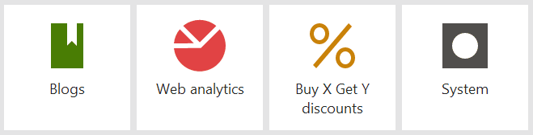
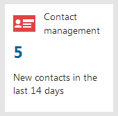

Displaying data on application tiles
You can modify Kentico application tiles to display various data. Tiles that display application data are called Live tiles. Live tiles display a numerical value and a description of the numerical value.

Live tiles on the application dashboard
You can modify the existing Live tiles to display different data or make static tiles into Live tiles.
Ideally, Live tiles should display information that may require users' attention. By having certain information displayed directly on the application dashboard, users don't have to visit the application itself unless necessary.
Create a class that implements the ILiveTileModelProvider interface.
Implement the logic of the class. The GetModel method needs to return the data of the Live tile in one of the following formats:
LiveTileModel object containing:
Value - the numerical value displayed on the Live tile
Description - the description of the numerical value
Null - in cases when you want the application tile to stay static. For example, when the number of objects displayed by the tile is 0.
usingSystem;usingCMS.Activities;usingCMS.ApplicationDashboard.Web.UI;usingCMS.ContactManagement.Web.UI;usingCMS.Core;usingCMS.Helpers;publicclassContactManagementLiveTileModelProvider : ILiveTileModelProvider{publicLiveTileModel GetModel(LiveTileContext liveTileContext){if(liveTileContext ==null){thrownewArgumentNullException("liveTileContext");}returnCacheHelper.Cache(() =>{if(!ActivitySettingsHelper.OnlineMarketingEnabled(liveTileContext.SiteInfo.SiteName)){returnnull;}varnewContactsCount = GetNewContactsCount();returnnewLiveTileModel{Value = newContactsCount,Description ="New contacts in the last 14 days",};},newCacheSettings(2,"ContactManagementLiveTileModelProvider", liveTileContext.SiteInfo.SiteID));}/// <summary>/// Gets total number of new contacts from the last 14 days./// </summary>/// <returns>Number of new contacts</returns>privatestaticintGetNewContactsCount(){returnContactInfoProvider.GetContacts().CreatedAfter(DateTime.Now.AddDays(-14)).Count;}}
Register the live model provider via an assembly attribute using the module code name and UI element code name represented by the Live tile.
Note that registering an existing live model provider overwrites the functionality. This way, you can change the behaviour of the default Live tiles.[assembly: RegisterLiveTileModelProvider(ModuleName.ONLINEMARKETING,"ContactsFrameset",typeof(ContactManagementLiveTileModelProvider))]Save the file.
The Live tile now displays the number of contacts added in the last 14 days.

A Live tile displaying data